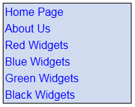

Using HTML Lists to aid Navigation
You have already seen how to create HTML lists. However, one of the most popular uses of the HTML list is for navigation. You'll see how this works now. What we'll do is to create this type of navigation list:

When the mouse is over one of the above links, you'll see this:

The above navigation list starts out as a simple unordered list of hyperlinks:
You then use CSS to change the styling of the HTML list. Let's see how.
Open up the code for your about.html page. At the top of the page, change your stylesheet link to this:
<LINK REL=Stylesheet TYPE ="text/css" HREF="../css/nav_list.css">
We're going to be creating a stylesheet called nav_list.css, and the above code places a link to it in the HTML.
To create the unordered list, change your code to the following:
What we have here is an unordered list with six list items. Each list item is a hyperlink. We've only got three pages, so the HREF parts have been copied and pasted. Notice that each hyperlink is placed between two LI tags.
The other thing to notice is the DIV tags surrounding the unordered list. We'll apply a CLASS to these DIV tags. This will affect anything between them. As an example, take a look at the following DIV with a style applied:
Here's what the above code will look like in a browser:
The only thing we've done here is to apply a border around some text. Notice that the border stretches right across the page. We can apply some padding, a background colour, and float the DIV to the left:
When we do, it will look like this:
Because we floated the DIV left, the border has now shrunk. The size is the width of all the text plus the 30 pixel padding we specified.
The thing to bear in mind here is that anything between the two DIV tags is affected.
Back to lists, then. We can apply some styling to the unordered list that sits between our two DIV tags.
Create a new CSS file. Save it to your CSS folder and call it nav_list.css. Now add the following CSS to your new file:
.navigation {
float: left;
font-family: Geneva, Arial;
border: 1px solid #000000;
}
Don't forget the full stop (period) at the start of navigation.
Go back to your about.html page. Add the CLASS information to the DIV tag (in bold below):
Save your work and reload your about.html page in your browser. Your list of hyperlinks should look like this:
We have a border around the links, and also a change of font. The DIV has also been floated to the left.
Back to the CSS file. Add this new rule below the navigation one:
.navigation ul {
margin: 0px;
padding: 0px;
list-style-type: none;
}
Your text file should look like this:
We're extending the navigation CLASS with this line:
.navigation ul {
By doing this, we can just home in on the UL part of the list. What we're saying is, "look for the navigation class, and then the UL item. Apply the style between curly brackets to just this part".
The style we're applying is to have no margin and no padding. But the important part is this line:
list-style-type: none;
The list style is the bullets. We're switching them off altogether with the value none. Other values for the list-style-type property are:
Asterisks
box
check
circle
diamond
disc
decimal
none
square
As you can see, there are lots to choose from (there's even more than shown here). However, not all are supported in every browser.
Save your work in your CSS file and refresh the web page in your browser. The result is this:
The black border is completely surrounding the hyperlinks now. And the bullets have disappeared.
We can continue the styling of our list by specifying only the A parts of the list items. Add the following rule to your CSS code:
.navigation li a {
}
Again, we're extending the navigation class. This time, we're drilling down even further, picking out the LI tag then the A tag, with a space separating the three elements. (This is not case sensitive.)
Between the two curly brackets, add the following CSS properties and values:
display: block;
padding: 2px;
width: 180px;
color: #0000FF;
background-color: #D0DBF0;
text-decoration: none;
Your CSS code should look like ours below:
We'll get to the display: block part soon. But the other five properties set the padding for the hyperlinks, a width of 180 pixels, a text colour and a background colour behind the text. The text-decoration switches off the underlines for hyperlinks.
Save your work and refresh your browser. Your navigation links will then look like this:
With these new styles applied, we have a background colour with underlines switched off. Notice that there is more space between each link.
Exercise
Play around with the values for your new CSS properties. Try changing the padding
and the width to see what happens. Experiment with different colours.
Exercise
In the first CSS rule, we have floated the DIV to the left. Change this so that
it floats to the right. Change it back when you're done.
To get the background colour to change when the mouse is over a hyperlink, we need to just home in on the hover property. You do it like this:
.navigation li a:hover {
background-color: #00DBF0;
}
So we still have .navigation li a. After the a, however, we have a colon followed by the CSS property hover. In between the curly brackets of this new rule, we've selected a different colour.
Add the new rule to your own CSS code. Save your work and refresh in the browser.
If you want to, you could also change the colour of the link when someone has clicked on them:
.navigation li a:visited {
background-color: red;
}
The only thing different is the word visited instead of hover.
Here's what your complete CSS code should look like, though:

And here's a reminder of what your browser should look like when you move your mouse over a link:
Horizontal Lists
Your navigation links don't have to be vertical. You can have horizontal links as well. The way this works is by changing the display property from block to inline. The property block means to set out the elements one top of the other. The property inline means keep them on the same line.
Examine the following CSS code:
It's not that different from the code you have.
With your nav_list.css open, click File > Save As. Change the file name to nav_list_horizontal.css. In the HTML for your about.html web page, change the file reference for your CSS LINK tag:
<LINK REL=Stylesheet TYPE ="text/css" HREF="../css/nav_list_horizontal.css">
Your about page will now be getting its CSS styles from the new nav_list_horizontal page.
Exercise
Compare your old code to the new CSS code above. Most of it is the same. But
change the lines that aren't.
If you complete this exercise, your browser should look like this:
Our list is now going from left to right, at the top of the page. This is all the result of display: inline, plus one or two more tweaks.
We'll leave HTML lists and move on. For more navigation lists, check out this
site:
http://css.maxdesign.com.au/listamatic/
There's some very creative use of navigation lists at the above site. Well worth a visit!
In the next section, you'll learn how to position elements with CSS.